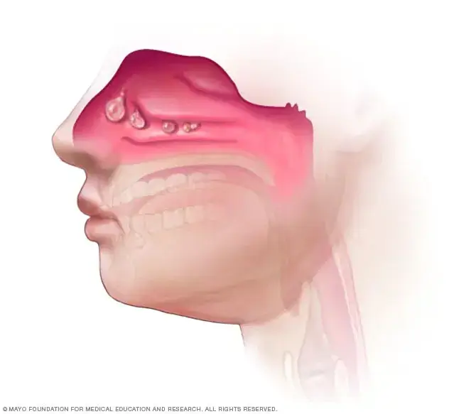
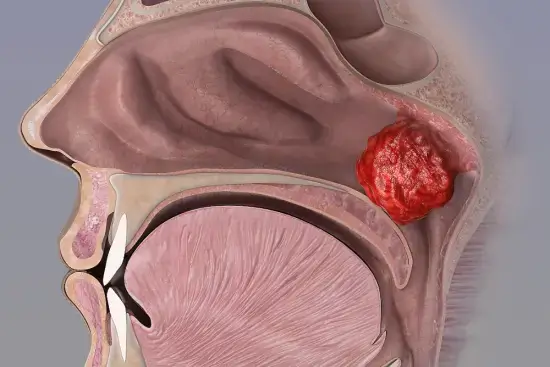

عيادة د. مختار الشرعبي الإستشارية
للأنف والأذن والحنجرة والرأس والعنق
✍️ دكتور / مختار الشرعبي
في هذا المقال نشرح الفرق بين أنواع لحميات الأنف من حيث الوظيفة والموقع والأعراض، ومتى يحتاج المريض للتدخل الجراحي.
يعاني الكثير من الأشخاص من انسداد الأنف وصعوبة التنفس، لكن الأسباب تختلف حسب الحالة. ومن أكثر الأسباب شيوعًا :

🔹 ما هي؟
هي تراكيب طبيعية موجودة لدى كل إنسان داخل الأنف، وعددها ثلاثة في كل تجويف تتصل بالجدار الجانبي لتجويف الأنف لتشكل ما يشبه الرفوف الأنفية ، ولا تشكل أي خطورة ولا يستدعي القلق في حال تم ملاحظتها من خلال النظر داخل تجويف الأنف ، بل وجودها له فائدة كبيرة ودور كبير في حماية وتحسين جودة النفس .
🔹 وظيفتها:
قد تتضخم القرينات نتيجة أحد التالي:
️ تنبيه:
القرينات ليست لحميات واستئصالها الكامل مضر. يُجرى فقط تصغير جزئي في حالات محددة
🔹 تُجرى العملية تحت التخدير العام ويغادر المريض المستشفى بعد ساعتين من العملية.

لحمية غير سرطانية تنمو من بطانة الأنف أو الجيوب نتيجة التهابات مزمنة أو تحسس شديد.
🔹 تُجرى العملية تحت التخدير العام ويغادر المريض المستشفى بعد ساعتين من العملية.
🔹 بعد العملية، يحتاج المريض إلى متابعة واستخدام بخاخات وقائية لتقليل عودة اللحميات.

🔹 ما هي؟
هي نسيج لمفاوي يوجد طبيعيًا - في مرحلة الطفولة خصوصاً -خلف الأنف (في البلعوم الأنفي)، ويساهم في المناعة لدى الأطفال. لكنها قد تتضخم وتسبب انسدادًا في مجرى التنفس.
في كثير من الحالات، يكون تضخم اللحمية البلعومية مترافقًا مع تضخم اللوزتين. وقد يتطلب العلاج استئصالًا مزدوجًا للحمية البلعومية واللوزتين لضمان تحسن أفضل.
من الأخطاء الشائعة
قيام بعض غير المختصين باستئصال اللوزتين فقط، رغم وجود تضخم واضح في اللحمية، مما يؤدي إلى:
وهذا ما نلاحظه في العديد من الحالات التي تُجرى فيها جراحة لوز دون تقييم دقيق للحمية البلعومية من قبل أطباء غير مختصين في الأنف والأذن والحنجرة.
🔹 تُجرى العملية تحت التخدير العام ويغادر المريض المستشفى بعد ساعتين من العملية.
التشخيص السليم والتقييم بالمنظار ضروري لتحديد سبب انسداد الأنف بدقة.
️ تنبيه:
نحذر من إجراء عمليات على يد غير المختصين، فالتدخل الخاطئ قد يزيد من تعقيد الحالة
تعز، ركن مفرق ماوية
نحرص على تقييم كل حالة بدقة وتقديم خطة علاجية مناسبة بإذن الله، تشمل الجانب الوقائي والنفسي والدوائي، والتعامل بمرونة مع الظروف المادية للمرضى
 👆 رسالة نصية
👆 رسالة نصية
 👆 رسالة واتساب
👆 رسالة واتساب